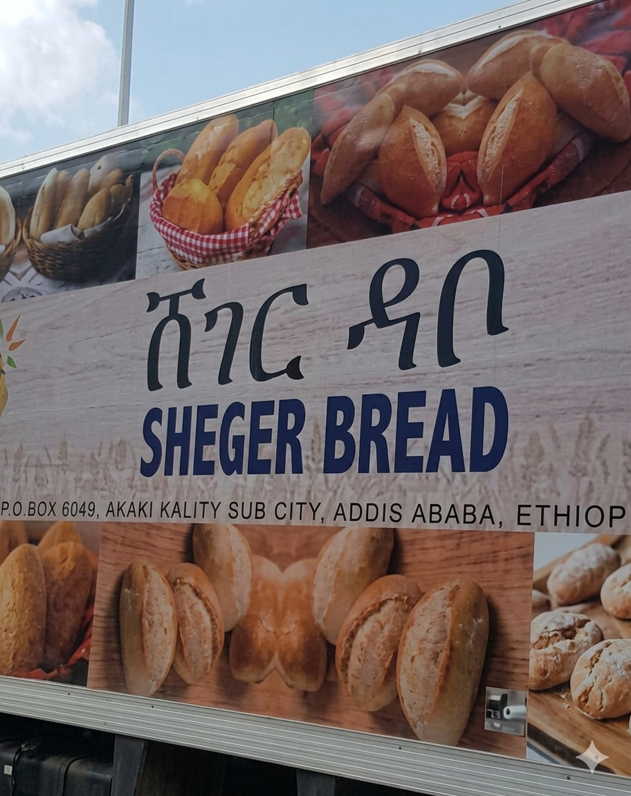

Mission
Provide safe, affordable bread and flour that keep Ethiopian households nourished every day.
 Sheger Bread & Flour
Sheger Bread & Flour
Who We Are • Horizon Plantations
A community-focused bread and flour factory in Kaliti, Addis Ababa, built to keep staple foods affordable, safe, and reliable. Producing fresh Sheger bread (Sheger Dabo) and fortified Sheger flour (Sheger Duket).


Sheger Bread & Flour Factory was established in 2020 in the Akaki-Kaliti district to improve food security and stabilize bread prices for Addis Ababa. Built with support from Horizon Plantations PLC, we combine a modern bakery and flour mill to make everyday staples accessible to families and retailers.
We focus on reliability, food safety, and community impact—supporting local jobs while ensuring consistent supply for households and shops across the city.
Provide safe, affordable bread and flour that keep Ethiopian households nourished every day.
Be the trusted staple-food partner for Addis Ababa—known for quality, consistency, and community-first operations.
Sheger Bread & Flour Factory was built in under a year with support from Horizon Plantations PLC as part of a national effort to improve access to staple foods. The facility integrates large-scale baking with flour milling to close the gap between demand and supply while creating local employment.
Our team works closely with city partners to keep production steady, maintain product quality, and ensure timely distribution to retailers and community outlets across Addis Ababa.